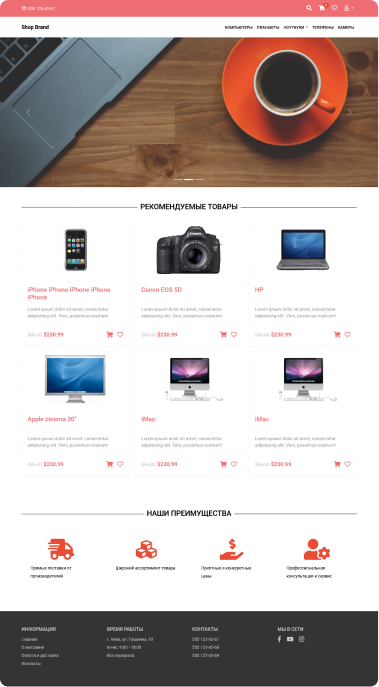

Как и куда мы будем двигаться в ITech
Подробная программа курса
Часть 1
Основы HTML
В данном блоке мы начнем изучать язык разметки HTML. В курсе мы узнаем все теги, которыми пользуются веб-верстальщики каждый день и узнаем, как их применять.
Узнаем, что такое HTML-документ, из каких частей он состоит. Рассмотрим теги для оформления текста, ссылок, картинок. Рассмотрим теги, с помощью которых можно делать формы для отправки данных. Узнаем, как можно вставить видео и аудио на HTML-страницу и многое другое, что нам еще может понадобиться при создании HTML-страниц.
Часть 2
Основы CSS
Чтобы оформить внешний вид страницы – нужен CSS. Именно с помощью CSS мы задаем цвет текста, указываем шрифт и его размер, назначаем цвет для ссылок… Все это делается с помощью CSS-свойств и их значений.
В этом блоке мы изучим те свойства CSS, без которых не обходиться верстка ни одного макета. Изучим свойства для текста, шрифта, отступы для блоков, позиционирование, узнаем, как сделать фон для страницы и многое другое, с чем верстальщики работают каждый день.
Часть 3
Bootstrap 5. Теория
В первой части курса вы найдете знакомство с теорией CSS-фреймворка Bootstrap 5 Вы увидите варианты подключения Bootstrap к вашему проекту. Сразу 15 уроков отведено такой важной теме, как сетка Bootstrap. Также вы найдете несколько уроков по использованию популярных компонентов.
Вы увидите, как можно разделить страницу на нужное количество колонок и получить типовую разметку двух- или трехколоночного сайта. Вы узнаете о классах выравнивания и центрирования элементов, а также о классах изменения порядка блоков. Отдельное внимание уделяется вопросу вкладывания сетки внутрь колонок. Как уже отмечалось, сетка Bootstrap является ключевым элементом фреймворка, поэтому важно научиться применять ее на практике.
Часть 4
Bootstrap 5. Практика
Во второй части курса мы перейдем к практике работы с Bootstrap 5. И здесь вы увидите верстку сайта интернет-магазина.
При этом вы увидите работу не с готовым дизайном, а работу с нуля. Такой вариант при верстке сайта часто применяется на практике.
В полученной верстке будут представлены все типовые элементы, которые можно встретить на сайте интернет-магазина: меню категорий, слайдер, карточка товара, секции популярных товаров, вкладки, галерея, корзина и т.д. Полученная в итоге верстка будет, конечно же, адаптивной.
Часть 5
Полное руководство по JavaScript
В курсе показана разработка с нуля 2-х полноценных веб-приложений, реализованных в форме условной веб-игры и блога. В курсе нет ничего лишнего, только те знания, которые действительно нужны для практической разработки в 2022 году.
Практический итог №1 (промежуточный): Разработка простого веб-приложения на JavaScript в форме игры Игра будет заключается в том, что за выбранное вами время необходимо будет прокликать как можно больше случайно сгенерированных элементов разных размеров и цветов.
Практический итог №2: Создание веб-приложения в форме блога на чистом JavaScript (без использования сторонних библиотек) Для закрепления всех полученных в курсе знания на практике показана разработка с нуля полноценного веб-приложения. Причем мы будем его создавать, используя лишь самые передовые методы и инструменты разработки, актуальные для 2019 года. В результате успешного прохождения видеокурса вы напишите полноценное веб-приложение на чистом JavaScript без использования сторонних библиотек – блог.